Oggetti e armi
Gli oggetti della mod iFoderi: cosa fanno e come si ottengono.
Armi e armature

Arco della Notte delle Streghe
- Si compra da Zuccotroia per 3 × Ticket del Lord Pumpkinhead
Arma di Kappa
Clic destro sul punto che guardi (fino a
un martello di luce gigante lo schiaccia
Non tocca citta', dungeon e claim
- Si trova giocando (bottino, eventi o altro).
Ascia del Pefforza
- Si trova giocando (bottino, eventi o altro).
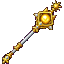
Ascia del Sole
Arma epica
Più colpisci senza fermarti, più il danno sale
Il terzo colpo di fila fa un lampo di luce a terra
illumina tutto attorno a te e brucia i nemici vicini
+50 mana massimo
+20% rigenerazione del mana
+20% danni contro i non morti
+10% cure
- Si crafta al banco da lavoro:
Gold Ingot Divine Pearl Gold Ingot Netherite Ingot Gold Ingot
Aura Piccone
- Si trova giocando (bottino, eventi o altro).

Bacchetta di Sambuca
- Si compra da Zuccotroia per 3 × Ticket del Lord Pumpkinhead
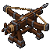
Balista
- Si trova giocando (bottino, eventi o altro).

Bastone dei Serafini
Arma rara
+150 mana massimo
+20% cure
+10% armatura
- Si crafta al banco da lavoro:
Divine Pearl Gold Ingot Divine Pearl Blaze Rod Blaze Rod
Cappello del Lord Pumpkinhead
- Si trova giocando (bottino, eventi o altro).
Come Gesù cristo
- Si trova giocando (bottino, eventi o altro).

Freccia di Zucca
- Si compra da Zuccotroia per 1 × Ticket del Lord Pumpkinhead
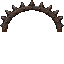
Ganascia della tagliola
- Si trova giocando (bottino, eventi o altro).

Ghignazucca
- Si compra da Zuccotroia per 3 × Ticket del Lord Pumpkinhead
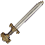
La Spada del Longobardo
Si dice che ora sia impugnata dal figlio
Solo un discendente può usarla
Danni tripli contro non morti, mostri, draghi e boss
Tieni premuto il sinistro 4 s: Stoccata del Longobardo
scatti avanti di 3 blocchi con la spada protesa · ricarica 15 s
Indistruttibile
- Si trova giocando (bottino, eventi o altro).
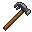
Martello da carpentiere
- Si trova giocando (bottino, eventi o altro).
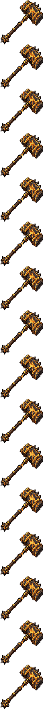
Martellone del Templare
- Si trova giocando (bottino, eventi o altro).

Mazza della Veglia
- Si compra da Zuccotroia per 3 × Ticket del Lord Pumpkinhead
Pistola zucca
- Si trova giocando (bottino, eventi o altro).
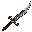
Pugnale dei Foderi
Arma dei Foderi
Velocissimo: ogni pugnalata va a segno
Con il gemello nell'altra mano attacchi il doppio più veloce
- Si trova giocando (bottino, eventi o altro).
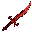
Pugnale dei Foderi Corrotto
Arma dei Foderi
Velocissimo: ogni pugnalata va a segno
Con il gemello nell'altra mano attacchi il doppio più veloce
- Si compra da Zuccotroia per 3 × Ticket del Lord Pumpkinhead
Scudo dei Foderi
Indistruttibile
Quando pari si alza uno scudo di energia
Ogni colpo parato: Resistenza II per 4 secondi
- Si trova giocando (bottino, eventi o altro).

Scudo della Veglia
- Si compra da Zuccotroia per 3 × Ticket del Lord Pumpkinhead
Scudone
- Si trova giocando (bottino, eventi o altro).
Soulbane
- Si trova giocando (bottino, eventi o altro).
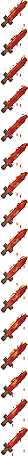
Spada dei Foderi corrotta
Non si ottiene giocando
Contro i giocatori ogni colpo toglie 50 cuori
Contro il resto e' come una spada di diamante
Spadone a due mani: un fendente alla volta
- Si trova giocando (bottino, eventi o altro).
Spadone ardente
- Si trova giocando (bottino, eventi o altro).
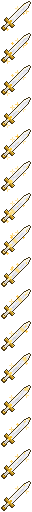
Spadone dei Foderi
Arma unica degli eventi · non si può creare
Spadone a due mani
Luce sacra: molto piu' forte contro mostri, non morti e boss
Clic sinistro: fendente lento e pesante
Tieni premuto il sinistro: Giustizia dei Foderi
parte solo caricata al 100% (3 s), onda d'urto
con il 300% del danno · ricarica
- Si compra da Cassiere per 100000 ×
 Fiche da 1000
Fiche da 1000
Spadone del Litte
- Si trova giocando (bottino, eventi o altro).

Spadone del Re Zucca
- Si compra da Zuccotroia per 3 × Ticket del Lord Pumpkinhead
Supporto spada
- Si crafta al banco da lavoro:
Iron Ingot Stick Stick Dark Oak Planks Dark Oak Planks Dark Oak Planks
Tentacolama
- Si trova giocando (bottino, eventi o altro).

Zanna di Ognissanti
- Si compra da Zuccotroia per 3 × Ticket del Lord Pumpkinhead
Casinò

Fiche da 10
Questa pila:
Non si gioca alle macchine: si può solo scambiare
Si gioca alle macchine e si cambia al banco
- Si compra da Cassiere per 1 × Emerald
- Si compra da Cassiere per 1 ×
 Fiche da 20
Fiche da 20 - Si compra da Cassiere per 1 ×
 Fiche da 50
Fiche da 50 - Si compra da Cassiere per 1 ×
 Fiche da 100
Fiche da 100
Fiche da 100
Questa pila:
Non si gioca alle macchine: si può solo scambiare
Si gioca alle macchine e si cambia al banco
- Si compra da Cassiere per 10 × Emerald
- Si compra da Cassiere per 1 × Emerald Block
- Si compra da Cassiere per 2 × Diamond
- Si compra da Cassiere per 10 × Fiche da 10
- Si compra da Cassiere per 5 × Fiche da 20
- Si compra da Cassiere per 2 × Fiche da 50
- Si compra da Cassiere per 1 × Fiche da 1000
Fiche da 1000
Questa pila:
Non si gioca alle macchine: si può solo scambiare
Si gioca alle macchine e si cambia al banco
- Si compra da Cassiere per 10 × Emerald Block
- Si compra da Cassiere per 100 × Fiche da 10
- Si compra da Cassiere per 50 × Fiche da 20
- Si compra da Cassiere per 20 × Fiche da 50
- Si compra da Cassiere per 10 × Fiche da 100
Fiche da 20
Questa pila:
Non si gioca alle macchine: si può solo scambiare
Si gioca alle macchine e si cambia al banco
- Si compra da Cassiere per 2 × Emerald
- Si compra da Cassiere per 2 × Fiche da 10
- Si compra da Cassiere per 2 × Fiche da 50
- Si compra da Cassiere per 1 × Fiche da 100
- Si compra da Cassiere per 1 × Fiche da 1000
Fiche da 50
Questa pila:
Non si gioca alle macchine: si può solo scambiare
Si gioca alle macchine e si cambia al banco
- Si compra da Cassiere per 5 × Emerald
- Si compra da Cassiere per 1 × Diamond
- Si compra da Cassiere per 5 × Fiche da 10
- Si compra da Cassiere per 5 × Fiche da 20
- Si compra da Cassiere per 1 × Fiche da 100
- Si compra da Cassiere per 1 × Fiche da 1000
Potenziamento
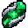
Pietra di potenziamento comune
- Si crafta (senza forma): Trofei Raid (qualsiasi), Diamond, Diamond, Diamond, Diamond
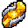
Pietra di potenziamento leggendaria
- Si crafta (senza forma): Pelliccia dello Yeti, Dente del Verme delle sabbie, Corno del Re dei Demoni, Seme antico del Guardiano, Zanna di Nil, Nether Star
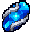
Pietra di potenziamento rara
- Si crafta (senza forma): Trofei Raid (qualsiasi), Trofei Raid (qualsiasi), Trofei Raid (qualsiasi), Netherite Ingot
Cavalcature e compagni

Destriero del Lord
- Si compra da Zuccotroia per 3000 ×
 Dolcetto
Dolcetto
Nuvola Speedy
Oggetto unico degli eventi · non si può creare
Accovacciati + tasto destro a mano vuota: fischi e arriva
(dall'inventario, da un forziere o da dove l'hai lasciata)
Cambia padrone solo se qualcuno uccide il padrone
Tasto destro su un blocco: piazza la nuvola
Tasto destro sulla nuvola: ti siedi (fino a 2)
Va dove guardi · salto: sali · corsa: velocissima
Accovacciati due volte: scendi · colpiscila: torna oggetto
- Si trova giocando (bottino, eventi o altro).
Pilastro di Tao Pai Pai
- Si trova giocando (bottino, eventi o altro).

Pipistrello compagno
- Si compra da Zuccotroia per 600 × Dolcetto

Scopa della Strega
Tasto destro su un blocco: posa
Tasto destro sul
Va dove guardi · salto: sali · corsa: più veloce
Accovacciati due volte: scendi · colpiscil
- Si compra da Zuccotroia per 3500 × Dolcetto
Veliero
Cocca a vela: si mette solo in acqua larga e profonda
All'ancora ci cammini sopra e scendi sotto coperta
Sedia del timone (a poppa): togli l'ancora e guidi
In viaggio si sta seduti; quando il timoniere si alza, la nave getta l'ancora
Si riprende col Fischietto del nostromo, se a bordo non c'è nessuno
- Si crafta al banco da lavoro:
White Wool White Banner White Wool Boats (qualsiasi) Compass Boats (qualsiasi) Boats (qualsiasi) Iron Block Boats (qualsiasi)
Altro
Altarino
- Si trova giocando (bottino, eventi o altro).
Arma forgiata
- Si trova giocando (bottino, eventi o altro).
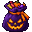
Bag of Foderween
- Si trova giocando (bottino, eventi o altro).
Banco di forgiatura
- Si crafta al banco da lavoro:
Planks (qualsiasi) Crafting Table Planks (qualsiasi) Iron Ingot Anvil Iron Ingot Planks (qualsiasi) Planks (qualsiasi)
Blocco di ricotta
- Si trova giocando (bottino, eventi o altro).
Caciocavallo
- Si trova giocando (bottino, eventi o altro).
Dolcetto
- Si trova giocando (bottino, eventi o altro).
Fischietto del nostromo
Col tasto usa su un veliero senza nessuno a bordo
lo riprendi nell'inventario, con il suo carico
Una volta ogni ora
- Si crafta (senza forma): Gold Ingot, String, Goat Horn
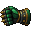
Guantone dei Foderi
Arma unica degli eventi · non si può creare
Tieni premuto il sinistro: pugno caricato
parte solo al 100% (3 s), respinge di 15 blocchi
Clic destro: montante, lancia il nemico
in aria di 9 blocchi · ricarica
Con uno scudo nell'altra mano: il destro para,
montante correndo + destro
- Si trova giocando (bottino, eventi o altro).
Kamehameha dei Foderi
Oggetto unico degli eventi · non si può creare
Tieni premuto il clic destro: Kamehameha
6 s di carica (resti fermo), se lasci il tasto si ferma
poi un'onda azzurra finché tieni premuto (massimo 6 s), lunga 40 blocchi
distrugge i blocchi · 10 cuori al secondo
ricarica 10 minuti
- Si trova giocando (bottino, eventi o altro).
KKK
- Si trova giocando (bottino, eventi o altro).
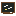
Lavagna
- Si crafta al banco da lavoro:
Planks (qualsiasi) Planks (qualsiasi) Planks (qualsiasi) Planks (qualsiasi) Black Concrete Planks (qualsiasi) Planks (qualsiasi) White Dye Planks (qualsiasi)
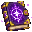
Libro dei dungeon
Scegli un dungeon, guardalo in anteprima e piazzalo dove vuoi
Per cancellarlo: /ifoderi dungeon <nome> cancella
- Si trova giocando (bottino, eventi o altro).
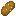
Pene del minatore
- Si trova giocando (bottino, eventi o altro).
Proiettore
- Si trova giocando (bottino, eventi o altro).

Quadro di MrHenk Dracula
- Si compra da Zuccotroia per 1500 × Dolcetto
Regolamento iFoderi RPG
Tasto destro per leggerlo
Se lo perdi: /regolamento
- Si trova giocando (bottino, eventi o altro).
Richiamo del compagno
- Si trova giocando (bottino, eventi o altro).
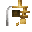
Sciabola pirata
- Si trova giocando (bottino, eventi o altro).
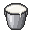
Secchio di Litte
- Si trova giocando (bottino, eventi o altro).
Sgabello arcano
- Si crafta al banco da lavoro:
Dark Oak Slab Dark Oak Slab Dark Oak Slab Stick Stick
Tavolo arcano
- Si crafta al banco da lavoro:
Book Amethyst Shard Arcane Essence Amethyst Shard Dark Oak Planks Dark Oak Planks
Tazza di litte
- Si trova giocando (bottino, eventi o altro).
Tazza di litte vuota
- Si trova giocando (bottino, eventi o altro).
Zucca stregata
- Si trova giocando (bottino, eventi o altro).